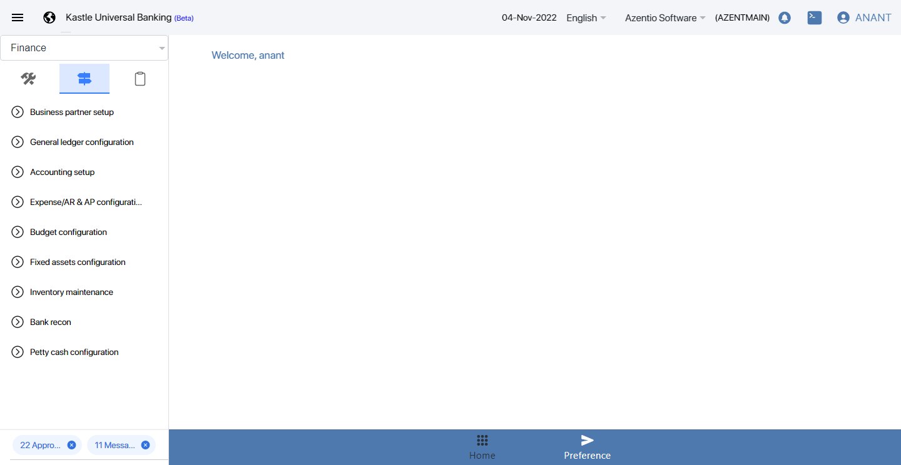
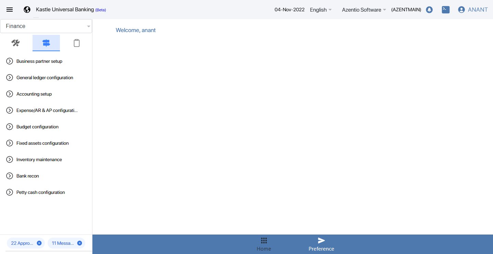

-
To verify user can see the GL report for stock return to vendors
17:06:54 PM / 30:07:089 Fail
To verify user can see the GL report for stock return to vendors
03.25.2022 17:06:54 03.25.2022 17:07:01 30:07:089 · #test-id=1FailCheck inventory stock confirmationGiven Launch the Azentio maker urlstepdefinitions.HooksClass.addScreenshot(io.cucumber.java.Scenario)screenshot Then Inventory Second direction iconStep skippedAnd Inventory Management ModuleStep skippedThen Click on Stock issue eye iconStep skippedAnd Click on First record eye iconStep skippedThen Get the New Request Referance NoStep skippedThen Click on Inventory stock confirmation eye iconStep skippedAnd Sub module Inventory stock confirmation click Add iconStep skippedThen Enter Request Referance NumberStep skippedAnd Enter Item code NumberStep skippedThen Accept the status in checkboxStep skippedAnd click the save icon for StockConfirmStep skippedAnd goto maker Notification IconStep skippedThen Click Submit button to Inventory RecordStep skippedAnd Give Remark and submit to ReviewerStep skippedGiven Login As ReviewerStep skippedAnd Goto Reviewer NotificationStep skippedThen open the submitted Record from makerStep skippedAnd Approve the Record in ReviewerStep skippedThen Enter The Remark and submit in ReviewerStep skippedGiven Login As CheckerStep skippedThen Click Security management moduleStep skippedAnd Click Sub module open Pool Edit iconStep skippedAnd Claim the submitted RecordStep skippedThen Goto Checker NotificationStep skippedAnd Open the Record Approve from ReviewerStep skippedAnd Approve the Record in Checker EndStep skippedThen Enter the Remark and submit the record in checkerStep skipped
Then Inventory Second direction iconStep skippedAnd Inventory Management ModuleStep skippedThen Click on Stock issue eye iconStep skippedAnd Click on First record eye iconStep skippedThen Get the New Request Referance NoStep skippedThen Click on Inventory stock confirmation eye iconStep skippedAnd Sub module Inventory stock confirmation click Add iconStep skippedThen Enter Request Referance NumberStep skippedAnd Enter Item code NumberStep skippedThen Accept the status in checkboxStep skippedAnd click the save icon for StockConfirmStep skippedAnd goto maker Notification IconStep skippedThen Click Submit button to Inventory RecordStep skippedAnd Give Remark and submit to ReviewerStep skippedGiven Login As ReviewerStep skippedAnd Goto Reviewer NotificationStep skippedThen open the submitted Record from makerStep skippedAnd Approve the Record in ReviewerStep skippedThen Enter The Remark and submit in ReviewerStep skippedGiven Login As CheckerStep skippedThen Click Security management moduleStep skippedAnd Click Sub module open Pool Edit iconStep skippedAnd Claim the submitted RecordStep skippedThen Goto Checker NotificationStep skippedAnd Open the Record Approve from ReviewerStep skippedAnd Approve the Record in Checker EndStep skippedThen Enter the Remark and submit the record in checkerStep skipped -
Check the Functionality of Inventory
17:07:01 PM / 31:05:060 Fail
Check the Functionality of Inventory
03.25.2022 17:07:01 03.25.2022 17:08:06 31:05:060 · #test-id=62FailCheck inventory stock confirmationGiven Navigate to URL and user should login as a makerstepdefinitions.HooksClass.addScreenshot(io.cucumber.java.Scenario)screenshot Then Inventory Second direction iconstepdefinitions.HooksClass.addScreenshot(io.cucumber.java.Scenario)screenshotAnd Inventory Management Modulestepdefinitions.HooksClass.addScreenshot(io.cucumber.java.Scenario)Then Click on Stock issue eye iconStep skippedAnd Click on First record eye iconStep skippedThen Get the New Request Referance NoStep skippedThen Click on Inventory stock confirmation eye iconStep skippedAnd Sub module Inventory stock confirmation click Add iconStep skippedThen Enter the Request Referance NumberStep skippedAnd Enter Item code NumberStep skippedThen Accept the status in checkboxStep skippedAnd click the save icon for StockConfirmStep skippedAnd goto maker Notification iconStep skippedThen Click Submit button to Inventory RecordStep skippedAnd Give Remark and submit to reviewerStep skippedThen Open Reviewer accountStep skippedAnd Click on notificationStep skippedThen Approve the record which we submitted from maker stageStep skippedThen Go to Checker accountStep skippedAnd Clam the recordStep skippedThen Click on notification and approve the recordStep skippedstepdefinitions.HooksClass.TearDown(io.cucumber.java.Scenario)
Then Inventory Second direction iconstepdefinitions.HooksClass.addScreenshot(io.cucumber.java.Scenario)screenshotAnd Inventory Management Modulestepdefinitions.HooksClass.addScreenshot(io.cucumber.java.Scenario)Then Click on Stock issue eye iconStep skippedAnd Click on First record eye iconStep skippedThen Get the New Request Referance NoStep skippedThen Click on Inventory stock confirmation eye iconStep skippedAnd Sub module Inventory stock confirmation click Add iconStep skippedThen Enter the Request Referance NumberStep skippedAnd Enter Item code NumberStep skippedThen Accept the status in checkboxStep skippedAnd click the save icon for StockConfirmStep skippedAnd goto maker Notification iconStep skippedThen Click Submit button to Inventory RecordStep skippedAnd Give Remark and submit to reviewerStep skippedThen Open Reviewer accountStep skippedAnd Click on notificationStep skippedThen Approve the record which we submitted from maker stageStep skippedThen Go to Checker accountStep skippedAnd Clam the recordStep skippedThen Click on notification and approve the recordStep skippedstepdefinitions.HooksClass.TearDown(io.cucumber.java.Scenario)
Started
Mar 25, 2022 05:06:52 PM
Ended
Mar 25, 2022 05:08:06 PM
Features Passed
0
Features Failed
2
Features
Scenarios
Steps
Timeline
Tags
| Name | Passed | Failed | Skipped | Others | Passed % |
|---|---|---|---|---|---|
| @KUBS_INV_MGMT_UAT_004_StockConfirm | 0 | 2 | 0 | 0 | 0% |
System/Environment
| Name | Value |
|---|---|
| version | 10 |
| os | windows |
-
@KUBS_INV_MGMT_UAT_004_StockConfirm
2 tests
@KUBS_INV_MGMT_UAT_004_StockConfirm
2 failedStatus Timestamp TestName Fail 17:06:54 PM Check inventory stock confirmation To verify user can see the GL report for stock return to vendors.Check inventory stock confirmationFail 17:07:01 PM Check inventory stock confirmation Check the Functionality of Inventory.Check inventory stock confirmation
-
java.lang.NullPointerException
1 tests
java.lang.NullPointerException
1 failedStatus Timestamp TestName Fail 17:07:01 PM Given Launch the Azentio maker url To verify user can see the GL report for stock return to vendors.Check inventory stock confirmation.Given Launch the Azentio maker url -
org.openqa.selenium.WebDriverException
1 tests
org.openqa.selenium.WebDriverException
1 failedStatus Timestamp TestName Fail 17:07:18 PM And Inventory Management Module Check the Functionality of Inventory.Check inventory stock confirmation.And Inventory Management ModuleFail 17:07:54 PM stepdefinitions.HooksClass.addScreenshot(io.cucumber.java.Scenario) Check the Functionality of Inventory.Check inventory stock confirmation.stepdefinitions.HooksClass.addScreenshot(io.cucumber.java.Scenario)Fail 17:08:06 PM stepdefinitions.HooksClass.TearDown(io.cucumber.java.Scenario) Check the Functionality of Inventory.Check inventory stock confirmation.stepdefinitions.HooksClass.TearDown(io.cucumber.java.Scenario)